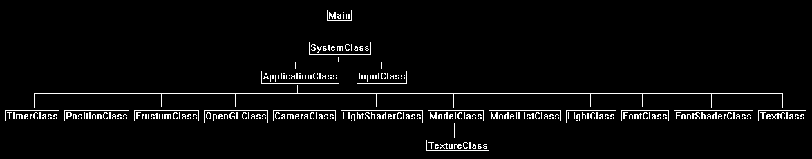
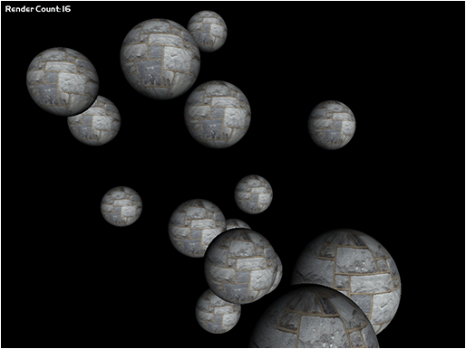

The three-dimensional viewing area on the screen where everything is drawn to is called the viewing frustum.
Everything that is inside the frustum will be rendered to the screen by the video card.
Everything that is outside of the frustum the video card will examine and then discard during the rendering process.
However, the process of depending on the video card to cull for us can be expensive if we have large scenes.
For example, say we have a scene with 2000+ models that are 5,000 polygons each but only 10-20 are viewable at any given time.
The video card has to examine every single triangle in all 2000 models to remove 1990 models from the scene just so we can draw 10 models.
As you can see this is very inefficient.
How frustum culling solves our problem is that we can instead determine before rendering if a model is in our frustum or not.
This saves us sending all the triangles to the video card and allows us to just send the triangles that need to be drawn.
How we do this is that we put either a cube, a rectangle, or a sphere around each model and just calculate if that cube, rectangle, or sphere is viewable.
The math to do that is usually only a couple lines of code which then removes the need to possibly test several thousand triangles.
To demonstrate how this works we will first create a scene with 25 randomly placed spheres.
We will then rotate the camera manually to test culling of the spheres that are out of our view using the left and right arrow keys.
We will also use a counter and display the number of spheres that are being drawn and not culled for confirmation.
We will use code from several of the previous tutorials to create the scene.
Framework
The frame work has mostly classes from several of the previous tutorials.
We do have three new classes called FrustumClass, PositionClass, and ModelListClass.
FrustumClass will encapsulate the frustum culling ability this tutorial is focused on.
ModelListClass will contain a list of the position information of the 25 spheres that will be randomly generated each time we run the program.
PositionClass will handle the viewing rotation of the camera based on if the user is pressing the left or right arrow key.

Frustumclass.h
The header file for the FrustumClass is fairly simple.
The class doesn't require any initialization or shutdown.
Each frame the ConstructFrustum function is called after the camera has first been rendered.
The ConstructFrustum function uses the private m_planes to calculate and store the six planes of the view frustum based on the updated viewing location.
From there we can call any of the four check functions to see if either a point, cube, sphere, or rectangle are inside the viewing frustum or not.
////////////////////////////////////////////////////////////////////////////////
// Filename: frustumclass.h
////////////////////////////////////////////////////////////////////////////////
#ifndef _FRUSTUMCLASS_H_
#define _FRUSTUMCLASS_H_
///////////////////////
// MY CLASS INCLUDES //
///////////////////////
#include "openglclass.h"
////////////////////////////////////////////////////////////////////////////////
// Class name: FrustumClass
////////////////////////////////////////////////////////////////////////////////
class FrustumClass
{
public:
FrustumClass();
FrustumClass(const FrustumClass&);
~FrustumClass();
void ConstructFrustum(OpenGLClass*, float, float*, float*);
bool CheckPoint(float, float, float);
bool CheckCube(float, float, float, float);
bool CheckSphere(float, float, float, float);
bool CheckRectangle(float, float, float, float, float, float);
private:
float m_planes[6][4];
};
#endif
Frustumclass.cpp
////////////////////////////////////////////////////////////////////////////////
// Filename: frustumclass.cpp
////////////////////////////////////////////////////////////////////////////////
#include "frustumclass.h"
FrustumClass::FrustumClass()
{
}
FrustumClass::FrustumClass(const FrustumClass& other)
{
}
FrustumClass::~FrustumClass()
{
}
ConstructFrustum is called every frame by the ApplicationClass.
It passes in the OpenGL pointer, the depth of the screen, the view matrix, and the projection matrix.
We then use these input variables to calculate the matrix of the view frustum at that frame.
With the new frustum matrix we then calculate the six planes that form the view frustum.
void FrustumClass::ConstructFrustum(OpenGLClass* OpenGL, float screenDepth, float* viewMatrix, float* projectionMatrix)
{
float zMinimum, r, t;
float matrix[16];
// Calculate the minimum Z distance in the frustum.
zMinimum = -projectionMatrix[14] / projectionMatrix[10];
r = screenDepth / (screenDepth - zMinimum);
projectionMatrix[10] = r;
projectionMatrix[14] = -r * zMinimum;
// Create the frustum matrix from the view matrix and updated projection matrix.
OpenGL->MatrixMultiply(matrix, viewMatrix, projectionMatrix);
// Get the near plane of the frustum.
m_planes[0][0] = matrix[2];
m_planes[0][1] = matrix[6];
m_planes[0][2] = matrix[10];
m_planes[0][3] = matrix[14];
// Normalize it.
t = (float)sqrt((m_planes[0][0] * m_planes[0][0]) + (m_planes[0][1] * m_planes[0][1]) + (m_planes[0][2] * m_planes[0][2]));
m_planes[0][0] /= t;
m_planes[0][1] /= t;
m_planes[0][2] /= t;
m_planes[0][3] /= t;
// Calculate the far plane of the frustum.
m_planes[1][0] = matrix[3] - matrix[2];
m_planes[1][1] = matrix[7] - matrix[6];
m_planes[1][2] = matrix[11] - matrix[10];
m_planes[1][3] = matrix[15] - matrix[14];
// Normalize it.
t = (float)sqrt((m_planes[1][0] * m_planes[1][0]) + (m_planes[1][1] * m_planes[1][1]) + (m_planes[1][2] * m_planes[1][2]));
m_planes[1][0] /= t;
m_planes[1][1] /= t;
m_planes[1][2] /= t;
m_planes[1][3] /= t;
// Calculate the left plane of the frustum.
m_planes[2][0] = matrix[3] + matrix[0];
m_planes[2][1] = matrix[7] + matrix[4];
m_planes[2][2] = matrix[11] + matrix[8];
m_planes[2][3] = matrix[15] + matrix[12];
// Normalize it.
t = (float)sqrt((m_planes[2][0] * m_planes[2][0]) + (m_planes[2][1] * m_planes[2][1]) + (m_planes[2][2] * m_planes[2][2]));
m_planes[2][0] /= t;
m_planes[2][1] /= t;
m_planes[2][2] /= t;
m_planes[2][3] /= t;
// Calculate the right plane of the frustum.
m_planes[3][0] = matrix[3] - matrix[0];
m_planes[3][1] = matrix[7] - matrix[4];
m_planes[3][2] = matrix[11] - matrix[8];
m_planes[3][3] = matrix[15] - matrix[12];
// Normalize it.
t = (float)sqrt((m_planes[3][0] * m_planes[3][0]) + (m_planes[3][1] * m_planes[3][1]) + (m_planes[3][2] * m_planes[3][2]));
m_planes[3][0] /= t;
m_planes[3][1] /= t;
m_planes[3][2] /= t;
m_planes[3][3] /= t;
// Calculate the top plane of the frustum.
m_planes[4][0] = matrix[3] - matrix[1];
m_planes[4][1] = matrix[7] - matrix[5];
m_planes[4][2] = matrix[11] - matrix[9];
m_planes[4][3] = matrix[15] - matrix[13];
// Normalize it.
t = (float)sqrt((m_planes[4][0] * m_planes[4][0]) + (m_planes[4][1] * m_planes[4][1]) + (m_planes[4][2] * m_planes[4][2]));
m_planes[4][0] /= t;
m_planes[4][1] /= t;
m_planes[4][2] /= t;
m_planes[4][3] /= t;
// Calculate the bottom plane of the frustum.
m_planes[5][0] = matrix[3] + matrix[1];
m_planes[5][1] = matrix[7] + matrix[5];
m_planes[5][2] = matrix[11] + matrix[9];
m_planes[5][3] = matrix[15] + matrix[13];
// Normalize it.
t = (float)sqrt((m_planes[5][0] * m_planes[5][0]) + (m_planes[5][1] * m_planes[5][1]) + (m_planes[5][2] * m_planes[5][2]));
m_planes[5][0] /= t;
m_planes[5][1] /= t;
m_planes[5][2] /= t;
m_planes[5][3] /= t;
return;
}
CheckPoint checks if a single point is inside the viewing frustum.
This is the most general of the four checking algorithms but can be very efficient if used correctly in the right situation over the other checking methods.
It takes the point and checks to see if it is inside all six planes.
If the point is inside all six then it returns true, otherwise it returns false if not.
bool FrustumClass::CheckPoint(float x, float y, float z)
{
int i;
// Check if the point is inside all six planes of the view frustum.
for(i=0; i<6; i++)
{
if(((m_planes[i][0] * x) + (m_planes[i][1] * y) + (m_planes[i][2] * z) + m_planes[i][3]) < 0.0f)
{
return false;
}
}
return true;
}
CheckCube checks if any of the eight corner points of the cube are inside the viewing frustum.
It only requires as input the center point of the cube and the radius; it uses those to calculate the 8 corner points of the cube.
It then checks if any one of the corner points are inside all 6 planes of the viewing frustum.
If it does find a point inside all six planes of the viewing frustum it returns true, otherwise it returns false.
bool FrustumClass::CheckCube(float xCenter, float yCenter, float zCenter, float radius)
{
int i;
// Check if any one point of the cube is in the view frustum.
for(i=0; i<6; i++)
{
if(m_planes[i][0] * (xCenter - radius) +
m_planes[i][1] * (yCenter - radius) +
m_planes[i][2] * (zCenter - radius) + m_planes[i][3] >= 0.0f)
{
continue;
}
if(m_planes[i][0] * (xCenter + radius) +
m_planes[i][1] * (yCenter - radius) +
m_planes[i][2] * (zCenter - radius) + m_planes[i][3] >= 0.0f)
{
continue;
}
if(m_planes[i][0] * (xCenter - radius) +
m_planes[i][1] * (yCenter + radius) +
m_planes[i][2] * (zCenter - radius) + m_planes[i][3] >= 0.0f)
{
continue;
}
if(m_planes[i][0] * (xCenter + radius) +
m_planes[i][1] * (yCenter + radius) +
m_planes[i][2] * (zCenter - radius) + m_planes[i][3] >= 0.0f)
{
continue;
}
if(m_planes[i][0] * (xCenter - radius) +
m_planes[i][1] * (yCenter - radius) +
m_planes[i][2] * (zCenter + radius) + m_planes[i][3] >= 0.0f)
{
continue;
}
if(m_planes[i][0] * (xCenter + radius) +
m_planes[i][1] * (yCenter - radius) +
m_planes[i][2] * (zCenter + radius) + m_planes[i][3] >= 0.0f)
{
continue;
}
if(m_planes[i][0] * (xCenter - radius) +
m_planes[i][1] * (yCenter + radius) +
m_planes[i][2] * (zCenter + radius) + m_planes[i][3] >= 0.0f)
{
continue;
}
if(m_planes[i][0] * (xCenter + radius) +
m_planes[i][1] * (yCenter + radius) +
m_planes[i][2] * (zCenter + radius) + m_planes[i][3] >= 0.0f)
{
continue;
}
return false;
}
return true;
}
CheckSphere checks if the radius of the sphere from the center point is inside all six planes of the viewing frustum.
If it is outside any of them then the sphere cannot be seen and the function will return false.
If it is inside all six the function returns true that the sphere can be seen.
This will be the function we use for checks in this tutorial.
bool FrustumClass::CheckSphere(float xCenter, float yCenter, float zCenter, float radius)
{
int i;
// Check if the radius of the sphere is inside the view frustum.
for(i=0; i<6; i++)
{
if(((m_planes[i][0] * xCenter) + (m_planes[i][1] * yCenter) + (m_planes[i][2] * zCenter) + m_planes[i][3]) < -radius)
{
return false;
}
}
return true;
}
CheckRectangle works the same as CheckCube except that that it takes as input the x radius, y radius, and z radius of the rectangle instead of just a single radius of a cube.
It can then calculate the 8 corner points of the rectangle and do the frustum checks similar to the CheckCube function.
bool FrustumClass::CheckRectangle(float xCenter, float yCenter, float zCenter, float xSize, float ySize, float zSize)
{
int i;
// Check if any of the 6 planes of the rectangle are inside the view frustum.
for(i=0; i<6; i++)
{
if(m_planes[i][0] * (xCenter - xSize) +
m_planes[i][1] * (yCenter - ySize) +
m_planes[i][2] * (zCenter - zSize) + m_planes[i][3] >= 0.0f)
{
continue;
}
if(m_planes[i][0] * (xCenter + xSize) +
m_planes[i][1] * (yCenter - ySize) +
m_planes[i][2] * (zCenter - zSize) + m_planes[i][3] >= 0.0f)
{
continue;
}
if(m_planes[i][0] * (xCenter - xSize) +
m_planes[i][1] * (yCenter + ySize) +
m_planes[i][2] * (zCenter - zSize) + m_planes[i][3] >= 0.0f)
{
continue;
}
if(m_planes[i][0] * (xCenter - xSize) +
m_planes[i][1] * (yCenter - ySize) +
m_planes[i][2] * (zCenter + zSize) + m_planes[i][3] >= 0.0f)
{
continue;
}
if(m_planes[i][0] * (xCenter + xSize) +
m_planes[i][1] * (yCenter + ySize) +
m_planes[i][2] * (zCenter - zSize) + m_planes[i][3] >= 0.0f)
{
continue;
}
if(m_planes[i][0] * (xCenter + xSize) +
m_planes[i][1] * (yCenter - ySize) +
m_planes[i][2] * (zCenter + zSize) + m_planes[i][3] >= 0.0f)
{
continue;
}
if(m_planes[i][0] * (xCenter - xSize) +
m_planes[i][1] * (yCenter + ySize) +
m_planes[i][2] * (zCenter + zSize) + m_planes[i][3] >= 0.0f)
{
continue;
}
if(m_planes[i][0] * (xCenter + xSize) +
m_planes[i][1] * (yCenter + ySize) +
m_planes[i][2] * (zCenter + zSize) + m_planes[i][3] >= 0.0f)
{
continue;
}
return false;
}
return true;
}
Modellistclass.h
ModelListClass is a new class for maintaining information about all the models in the scene.
For this tutorial it only maintains the position of the sphere models since we only have one model type.
This class can be expanded to maintain all the different types of models in the scene and indexes to their ModelClass but I am keeping this tutorial simple for now.
////////////////////////////////////////////////////////////////////////////////
// Filename: modellistclass.h
////////////////////////////////////////////////////////////////////////////////
#ifndef _MODELLISTCLASS_H_
#define _MODELLISTCLASS_H_
//////////////
// INCLUDES //
//////////////
#include <stdlib.h>
#include <time.h>
///////////////////////////////////////////////////////////////////////////////
// Class name: ModelListClass
///////////////////////////////////////////////////////////////////////////////
class ModelListClass
{
private:
struct ModelInfoType
{
float positionX, positionY, positionZ;
};
public:
ModelListClass();
ModelListClass(const ModelListClass&);
~ModelListClass();
void Initialize(int);
void Shutdown();
int GetModelCount();
void GetData(int, float&, float&, float&);
private:
int m_modelCount;
ModelInfoType* m_ModelInfoList;
};
#endif
Modellistclass.cpp
////////////////////////////////////////////////////////////////////////////////
// Filename: modellistclass.cpp
////////////////////////////////////////////////////////////////////////////////
#include "modellistclass.h"
ModelListClass::ModelListClass()
{
m_ModelInfoList = 0;
}
ModelListClass::ModelListClass(const ModelListClass& other)
{
}
ModelListClass::~ModelListClass()
{
}
void ModelListClass::Initialize(int numModels)
{
int i;
First store the number of models that will be used and then create the list array of them using the ModelInfoType structure.
// Store the number of models.
m_modelCount = numModels;
// Create a list array of the model information.
m_ModelInfoList = new ModelInfoType[m_modelCount];
Seed the random number generator with the current time and then randomly generate the position of the models and store them in the list array.
// Seed the random generator with the current time.
srand((unsigned int)time(NULL));
// Go through all the models and randomly generate the position.
for(i=0; i<m_modelCount; i++)
{
// Generate a random position in front of the viewer for the mode.
m_ModelInfoList[i].positionX = (((float)rand() - (float)rand()) / RAND_MAX) * 10.0f;
m_ModelInfoList[i].positionY = (((float)rand() - (float)rand()) / RAND_MAX) * 10.0f;
m_ModelInfoList[i].positionZ = ((((float)rand() - (float)rand()) / RAND_MAX) * 10.0f) + 5.0f;
}
return;
}
The Shutdown function releases the model information list array.
void ModelListClass::Shutdown()
{
// Release the model information list.
if(m_ModelInfoList)
{
delete [] m_ModelInfoList;
m_ModelInfoList = 0;
}
return;
}
GetModelCount returns the number of models that this class maintains information about.
int ModelListClass::GetModelCount()
{
return m_modelCount;
}
The GetData function extracts the position of a model at the given input index location.
void ModelListClass::GetData(int index, float& positionX, float& positionY, float& positionZ)
{
positionX = m_ModelInfoList[index].positionX;
positionY = m_ModelInfoList[index].positionY;
positionZ = m_ModelInfoList[index].positionZ;
return;
}
Positionclass.h
To allow for camera movement by using the left and right arrow key in this tutorial we create a new class to calculate and maintain the position of the viewer.
This class will only handle turning left and right for now but can be expanded to maintain all different movement changes.
The movement also includes acceleration and deceleration to create a smooth camera effect.
////////////////////////////////////////////////////////////////////////////////
// Filename: positionclass.h
////////////////////////////////////////////////////////////////////////////////
#ifndef _POSITIONCLASS_H_
#define _POSITIONCLASS_H_
//////////////
// INCLUDES //
//////////////
#include <math.h>
////////////////////////////////////////////////////////////////////////////////
// Class name: PositionClass
////////////////////////////////////////////////////////////////////////////////
class PositionClass
{
public:
PositionClass();
PositionClass(const PositionClass&);
~PositionClass();
void SetFrameTime(float);
void GetRotation(float&);
void TurnLeft(bool);
void TurnRight(bool);
private:
float m_frameTime;
float m_rotationY;
float m_leftTurnSpeed, m_rightTurnSpeed;
};
#endif
Positionclass.cpp
////////////////////////////////////////////////////////////////////////////////
// Filename: positionclass.cpp
////////////////////////////////////////////////////////////////////////////////
#include "positionclass.h"
The class constructor initializes the private member variables to zero to start with.
PositionClass::PositionClass()
{
m_frameTime = 0.0f;
m_rotationY = 0.0f;
m_leftTurnSpeed = 0.0f;
m_rightTurnSpeed = 0.0f;
}
PositionClass::PositionClass(const PositionClass& other)
{
}
PositionClass::~PositionClass()
{
}
The SetFrameTime function is used to set the frame speed in this class.
PositionClass will use that frame time speed to calculate how fast the viewer should be moving and rotating.
This function should always be called at the beginning of each frame before using this class to move the viewing position.
void PositionClass::SetFrameTime(float time)
{
m_frameTime = time;
return;
}
GetRotation returns the Y-axis rotation of the viewer.
This is the only helper function we need for this tutorial but could be expanded to get more information about the location of the viewer.
void PositionClass::GetRotation(float& y)
{
y = m_rotationY;
return;
}
The movement functions both work the same.
Both functions are called each frame.
The keydown input variable to each function indicates if the user is pressing the left key or the right key.
If they are pressing the key then each frame the speed will accelerate until it hits a maximum.
This way the camera speeds up similar to the acceleration in a vehicle creating the effect of smooth movement and high responsiveness.
Likewise, if the user releases the key and the keydown variable is false it will then smoothly slow down each frame until the speed hits zero.
The speed is calculated against the frame time to ensure the movement speed remains the same regardless of the frame rate.
Each function then uses some basic math to calculate the new position of the camera.
void PositionClass::TurnLeft(bool keydown)
{
// If the key is pressed increase the speed at which the camera turns left. If not slow down the turn speed.
if(keydown)
{
m_leftTurnSpeed += m_frameTime * 10.0f;
if(m_leftTurnSpeed > (m_frameTime * 100.0f))
{
m_leftTurnSpeed = m_frameTime * 100.0f;
}
}
else
{
m_leftTurnSpeed -= m_frameTime * 1.0f;
if(m_leftTurnSpeed < 0.0f)
{
m_leftTurnSpeed = 0.0f;
}
}
// Update the rotation using the turning speed.
m_rotationY -= m_leftTurnSpeed;
if(m_rotationY < 0.0f)
{
m_rotationY += 360.0f;
}
return;
}
void PositionClass::TurnRight(bool keydown)
{
// If the key is pressed increase the speed at which the camera turns right. If not slow down the turn speed.
if(keydown)
{
m_rightTurnSpeed += m_frameTime * 10.0f;
if(m_rightTurnSpeed > (m_frameTime * 100.0f))
{
m_rightTurnSpeed = m_frameTime * 100.0f;
}
}
else
{
m_rightTurnSpeed -= m_frameTime * 1.0f;
if(m_rightTurnSpeed < 0.0f)
{
m_rightTurnSpeed = 0.0f;
}
}
// Update the rotation using the turning speed.
m_rotationY += m_rightTurnSpeed;
if(m_rotationY > 360.0f)
{
m_rotationY -= 360.0f;
}
return;
}
Inputclass.h
The InputClass was modified for this tutorial to add left and right key presses.
////////////////////////////////////////////////////////////////////////////////
// Filename: inputclass.h
////////////////////////////////////////////////////////////////////////////////
#ifndef _INPUTCLASS_H_
#define _INPUTCLASS_H_
/////////////
// DEFINES //
/////////////
const int KEY_ESCAPE = 0;
const int KEY_LEFT = 1;
const int KEY_RIGHT = 2;
////////////////////////////////////////////////////////////////////////////////
// Class name: InputClass
////////////////////////////////////////////////////////////////////////////////
class InputClass
{
public:
InputClass();
InputClass(const InputClass&);
~InputClass();
void Initialize();
void KeyDown(int);
void KeyUp(int);
bool IsEscapePressed();
bool IsLeftArrowPressed();
bool IsRightArrowPressed();
void ProcessMouse(int, int);
void GetMouseLocation(int&, int&);
void MouseDown();
void MouseUp();
bool IsMousePressed();
private:
bool m_keyboardState[256];
int m_mouseX, m_mouseY;
bool m_mousePressed;
};
#endif
Inputclass.cpp
////////////////////////////////////////////////////////////////////////////////
// Filename: inputclass.cpp
////////////////////////////////////////////////////////////////////////////////
#include "inputclass.h"
InputClass::InputClass()
{
}
InputClass::InputClass(const InputClass& other)
{
}
InputClass::~InputClass()
{
}
void InputClass::Initialize()
{
int i;
// Initialize the keyboard state.
for(i=0; i<256; i++)
{
m_keyboardState[i] = false;
}
// Initialize the mouse state.
m_mouseX = 0;
m_mouseY = 0;
m_mousePressed = false;
return;
}
The KeyDown and KeyUp function now handle keyboard states for left and right key presses.
void InputClass::KeyDown(int keySymbol)
{
switch(keySymbol)
{
case 65307:
{
m_keyboardState[KEY_ESCAPE] = true;
break;
}
case 65361:
{
m_keyboardState[KEY_LEFT] = true;
break;
}
case 65363:
{
m_keyboardState[KEY_RIGHT] = true;
break;
}
default:
{
break;
}
}
return;
}
void InputClass::KeyUp(int keySymbol)
{
switch(keySymbol)
{
case 65307:
{
m_keyboardState[KEY_ESCAPE] = false;
break;
}
case 65361:
{
m_keyboardState[KEY_LEFT] = false;
break;
}
case 65363:
{
m_keyboardState[KEY_RIGHT] = false;
break;
}
default:
{
break;
}
}
return;
}
bool InputClass::IsEscapePressed()
{
return m_keyboardState[KEY_ESCAPE];
}
We add two new functions for checking if the left or right arrow keys are pressed.
bool InputClass::IsLeftArrowPressed()
{
return m_keyboardState[KEY_LEFT];
}
bool InputClass::IsRightArrowPressed()
{
return m_keyboardState[KEY_RIGHT];
}
void InputClass::ProcessMouse(int mouseMotionX, int mouseMotionY)
{
m_mouseX = mouseMotionX;
m_mouseY = mouseMotionY;
return;
}
void InputClass::GetMouseLocation(int& mouseX, int& mouseY)
{
mouseX = m_mouseX;
mouseY = m_mouseY;
return;
}
void InputClass::MouseDown()
{
m_mousePressed = true;
return;
}
void InputClass::MouseUp()
{
m_mousePressed = false;
return;
}
bool InputClass::IsMousePressed()
{
return m_mousePressed;
}
Applicationclass.h
The ApplicationClass for this tutorial includes a number of classes we have used in the previous tutorials.
It also includes the frustumclass.h, positionclass.h, and modellistclass.h headers which are new.
////////////////////////////////////////////////////////////////////////////////
// Filename: applicationclass.h
////////////////////////////////////////////////////////////////////////////////
#ifndef _APPLICATIONCLASS_H_
#define _APPLICATIONCLASS_H_
/////////////
// GLOBALS //
/////////////
const bool FULL_SCREEN = false;
const bool VSYNC_ENABLED = true;
const float SCREEN_NEAR = 0.3f;
const float SCREEN_DEPTH = 1000.0f;
///////////////////////
// MY CLASS INCLUDES //
///////////////////////
#include "inputclass.h"
#include "openglclass.h"
#include "cameraclass.h"
#include "modelclass.h"
#include "lightclass.h"
#include "lightshaderclass.h"
#include "fontshaderclass.h"
#include "fontclass.h"
#include "textclass.h"
#include "positionclass.h"
#include "timerclass.h"
#include "modellistclass.h"
#include "frustumclass.h"
////////////////////////////////////////////////////////////////////////////////
// Class Name: ApplicationClass
////////////////////////////////////////////////////////////////////////////////
class ApplicationClass
{
public:
ApplicationClass();
ApplicationClass(const ApplicationClass&);
~ApplicationClass();
bool Initialize(Display*, Window, int, int);
void Shutdown();
bool Frame(InputClass*);
private:
bool Render();
bool UpdateRenderCountString(int);
private:
OpenGLClass* m_OpenGL;
CameraClass* m_Camera;
ModelClass* m_Model;
LightClass* m_Light;
LightShaderClass* m_LightShader;
FontShaderClass* m_FontShader;
FontClass* m_Font;
TextClass* m_RenderCountString;
PositionClass* m_Position;
TimerClass* m_Timer;
ModelListClass* m_ModelList;
FrustumClass* m_Frustum;
float m_baseViewMatrix[16];
};
#endif
Applicationclass.cpp
////////////////////////////////////////////////////////////////////////////////
// Filename: applicationclass.cpp
////////////////////////////////////////////////////////////////////////////////
#include "applicationclass.h"
ApplicationClass::ApplicationClass()
{
m_OpenGL = 0;
m_Camera = 0;
m_Model = 0;
m_Light = 0;
m_LightShader = 0;
m_FontShader = 0;
m_Font = 0;
m_RenderCountString = 0;
m_Position = 0;
m_Timer = 0;
m_ModelList = 0;
m_Frustum = 0;
}
ApplicationClass::ApplicationClass(const ApplicationClass& other)
{
}
ApplicationClass::~ApplicationClass()
{
}
bool ApplicationClass::Initialize(Display* display, Window win, int screenWidth, int screenHeight)
{
char modelFilename[128], textureFilename[128], renderString[32];
bool result;
// Create and initialize the OpenGL object.
m_OpenGL = new OpenGLClass;
result = m_OpenGL->Initialize(display, win, screenWidth, screenHeight, SCREEN_NEAR, SCREEN_DEPTH, VSYNC_ENABLED);
if(!result)
{
cout << "Error: Could not initialize the OpenGL object." << endl;
return false;
}
We create the camera object as we normally do.
However, we will take a copy of the view matrix from the start since we will be modifying the view matrix every time the camera turns, and we need this unmodified view matrix to render the text in the same location each frame.
// Create and initialize the camera object.
m_Camera = new CameraClass;
m_Camera->SetPosition(0.0f, 0.0f, -10.0f);
m_Camera->Render();
m_Camera->GetViewMatrix(m_baseViewMatrix);
We will load a sphere model for this tutorial.
// Set the file name of the model.
strcpy(modelFilename, "../Engine/data/sphere.txt");
// Set the file name of the texture.
strcpy(textureFilename, "../Engine/data/stone01.tga");
// Create and initialize the model object.
m_Model = new ModelClass;
result = m_Model->Initialize(m_OpenGL, modelFilename, textureFilename, true, NULL, true, NULL, true);
if(!result)
{
cout << "Error: Could not initialize the model object." << endl;
return false;
}
We will use just the basic light shader to render the spheres.
// Create and initialize the light object.
m_Light = new LightClass;
m_Light->SetDiffuseColor(1.0f, 1.0f, 1.0f, 1.0f);
m_Light->SetDirection(0.0f, 0.0f, 1.0f);
// Create and initialize the light shader object.
m_LightShader = new LightShaderClass;
result = m_LightShader->Initialize(m_OpenGL);
if(!result)
{
cout << "Error: Could not initialize the light shader object." << endl;
return false;
}
We need to render the number of spheres we are rendering to the screen using a FontClass, FontShaderClass, and TextClass object.
// Create and initialize the font shader object.
m_FontShader = new FontShaderClass;
result = m_FontShader->Initialize(m_OpenGL);
if(!result)
{
cout << "Error: Could not initialize the font shader object." << endl;
return false;
}
// Create and initialize the font object.
m_Font = new FontClass;
result = m_Font->Initialize(m_OpenGL, 0);
if(!result)
{
cout << "Error: Could not initialize the font object." << endl;
return false;
}
// Set the initial render count string.
strcpy(renderString, "Render Count: 0");
// Create and initialize the text object for the render count string.
m_RenderCountString = new TextClass;
result = m_RenderCountString->Initialize(m_OpenGL, screenWidth, screenHeight, 32, m_Font, renderString, 10, 10, 1.0f, 1.0f, 1.0f);
if(!result)
{
cout << "Error: Could not initialize the render count string object." << endl;
return false;
}
Here we create the new PositionClass object for maintaining where the viewer is positioned and where they are looking at.
// Create the position object.
m_Position = new PositionClass;
We create a timer also since we want smooth movement when moving the camera around according to the frame time.
// Create and initialize the timer object.
m_Timer = new TimerClass;
m_Timer->Initialize();
Here we create the new ModelListClass object and have it create 25 randomly placed sphere models.
// Create and initialize the model list object.
m_ModelList = new ModelListClass;
m_ModelList->Initialize(25);
And finally, we create our new FrustumClass object here.
// Create the frustum object.
m_Frustum = new FrustumClass;
return true;
}
void ApplicationClass::Shutdown()
{
// Release the frustum object.
if(m_Frustum)
{
delete m_Frustum;
m_Frustum = 0;
}
// Release the model list object.
if(m_ModelList)
{
m_ModelList->Shutdown();
delete m_ModelList;
m_ModelList = 0;
}
// Release the timer object.
if(m_Timer)
{
delete m_Timer;
m_Timer = 0;
}
// Release the position object.
if(m_Position)
{
delete m_Position;
m_Position = 0;
}
// Release the text objects for the render count string.
if(m_RenderCountString)
{
m_RenderCountString->Shutdown();
delete m_RenderCountString;
m_RenderCountString = 0;
}
// Release the font object.
if(m_Font)
{
m_Font->Shutdown();
delete m_Font;
m_Font = 0;
}
// Release the font shader object.
if(m_FontShader)
{
m_FontShader->Shutdown();
delete m_FontShader;
m_FontShader = 0;
}
// Release the light shader object.
if(m_LightShader)
{
m_LightShader->Shutdown();
delete m_LightShader;
m_LightShader = 0;
}
// Release the light object.
if(m_Light)
{
delete m_Light;
m_Light = 0;
}
// Release the model object.
if(m_Model)
{
m_Model->Shutdown();
delete m_Model;
m_Model = 0;
}
// Release the camera object.
if(m_Camera)
{
delete m_Camera;
m_Camera = 0;
}
// Release the OpenGL object.
if(m_OpenGL)
{
m_OpenGL->Shutdown();
delete m_OpenGL;
m_OpenGL = 0;
}
return;
}
bool ApplicationClass::Frame(InputClass* Input)
{
float rotationY;
bool result, keyDown;
Each frame we will update the time and then send that into the PositionClass object so that it can update any movement it needs to using the current frame time.
// Update the system stats.
m_Timer->Frame();
// Check if the escape key has been pressed, if so quit.
if(Input->IsEscapePressed() == true)
{
return false;
}
// Set the frame time for calculating the updated position.
m_Position->SetFrameTime(m_Timer->GetTime());
Here is where we check if either the left or right arrow keys are pressed or not.
We send in the result to the PositionClass object so it can accelerate or decelerate the left or right movement.
// Check if the left or right arrow key has been pressed, if so rotate the camera accordingly.
keyDown = Input->IsLeftArrowPressed();
m_Position->TurnLeft(keyDown);
keyDown = Input->IsRightArrowPressed();
m_Position->TurnRight(keyDown);
Each frame we get the current rotation of the camera and then update the CameraClass object with the new rotation.
This way we can provide our shaders the updated viewMatrix each frame.
// Get the current view point rotation.
m_Position->GetRotation(rotationY);
// Set the rotation of the camera.
m_Camera->SetRotation(0.0f, rotationY, 0.0f);
m_Camera->Render();
// Render the graphics scene.
result = Render();
if(!result)
{
return false;
}
return true;
}
bool ApplicationClass::Render()
{
float worldMatrix[16], viewMatrix[16], projectionMatrix[16], orthoMatrix[16];
float diffuseLightColor[4], lightDirection[3], pixelColor[4];
float positionX, positionY, positionZ, radius;
int modelCount, renderCount, i;
bool result, renderModel;
// Clear the buffers to begin the scene.
m_OpenGL->BeginScene(0.0f, 0.0f, 0.0f, 1.0f);
// Get the world, view, and projection matrices from the opengl and camera objects.
m_OpenGL->GetWorldMatrix(worldMatrix);
m_Camera->GetViewMatrix(viewMatrix);
m_OpenGL->GetProjectionMatrix(projectionMatrix);
m_OpenGL->GetOrthoMatrix(orthoMatrix);
The major change to the Render function is that we now construct the viewing frustum each frame based on the updated viewing matrix.
This construction has to occur each time the view matrix changes or the frustum culling checks we do will not be correct.
// Construct the frustum.
m_Frustum->ConstructFrustum(m_OpenGL, SCREEN_DEPTH, viewMatrix, projectionMatrix);
// Get the light properties.
m_Light->GetDirection(lightDirection);
m_Light->GetDiffuseColor(diffuseLightColor);
// Get the number of models that will be rendered.
modelCount = m_ModelList->GetModelCount();
// Initialize the count of models that have been rendered.
renderCount = 0;
Now loop through all the models in the ModelListClass object.
// Go through all the models and render them only if they can be seen by the camera view.
for(i=0; i<modelCount; i++)
{
// Get the position and color of the sphere model at this index.
m_ModelList->GetData(i, positionX, positionY, positionZ);
// Set the radius of the sphere to 1.0 since this is already known.
radius = 1.0f;
Here is where we use the new FrustumClass object.
We check if the sphere is viewable in the viewing frustum.
If it can be seen we render it, if it cannot be seen we skip it and check the next one.
This is where we will gain all the speed by using frustum culling.
// Check if the sphere model is in the view frustum.
renderModel = m_Frustum->CheckSphere(positionX, positionY, positionZ, radius);
// If it can be seen then render it, if not skip this model and check the next sphere.
if(renderModel)
{
// Move the model to the location it should be rendered at.
m_OpenGL->MatrixTranslation(worldMatrix, positionX, positionY, positionZ);
// Set the light shader parameters.
result = m_LightShader->SetShaderParameters(worldMatrix, viewMatrix, projectionMatrix, lightDirection, diffuseLightColor);
if(!result)
{
return false;
}
// Render the sphere model using the light shader.
m_Model->SetTexture1(0);
m_Model->Render();
// Reset to the original world matrix.
m_OpenGL->GetWorldMatrix(worldMatrix);
// Since this model was rendered then increase the count for this frame.
renderCount++;
}
}
// Disable the Z buffer and enable alpha blending for 2D rendering.
m_OpenGL->TurnZBufferOff();
m_OpenGL->EnableAlphaBlending();
We use the UpdateRenderCountString function and the TextClass to display how many spheres were actually rendered.
We can also infer from this number that the spheres that were not rendered were instead culled using the new FrustumClass object.
// Update the render count text.
result = UpdateRenderCountString(renderCount);
if(!result)
{
return false;
}
// Get the color to render the render count text as.
m_RenderCountString->GetPixelColor(pixelColor);
// Set the font shader as active and set its parameters.
result = m_FontShader->SetShaderParameters(worldMatrix, m_baseViewMatrix, orthoMatrix, pixelColor);
if(!result)
{
return false;
}
// Set the font texture as the active texture.
m_Font->SetTexture(0);
// Render the render count text string using the font shader.
m_RenderCountString->Render();
// Enable the Z buffer and disable alpha blending now that 2D rendering is complete.
m_OpenGL->TurnZBufferOn();
m_OpenGL->DisableAlphaBlending();
// Present the rendered scene to the screen.
m_OpenGL->EndScene();
return true;
}
The UpdateRenderCountString function will take the integer render count and modify the text string so that it can be rendered on the screen.
bool ApplicationClass::UpdateRenderCountString(int renderCount)
{
char tempString[16], finalString[32];
bool result;
// Convert the render count integer to string format.
sprintf(tempString, "%d", renderCount);
// Setup the render count string.
strcpy(finalString, "Render Count: ");
strcat(finalString, tempString);
// Update the sentence vertex buffer with the new string information.
result = m_RenderCountString->UpdateText(m_Font, finalString, 10, 10, 1.0f, 1.0f, 1.0f);
if(!result)
{
return false;
}
return true;
}
Summary
Now you have seen how to cull objects.
The only trick from here is determining whether a cube, rectangle, sphere, or clever use of a point is better for culling your different objects.

To Do Exercises
1. Recompile and run the program. Use the left and right arrow key to move the camera and update the render count in the upper left corner.
2. Load the cube model instead and change the cull check to CheckCube.
3. Create some different models and test which of the culling checks works best for them.
Source Code
Source Code and Data Files: gl4linuxtut23_src.tar.gz